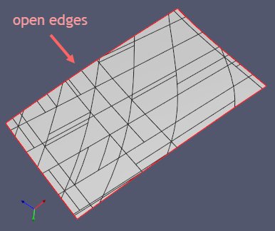
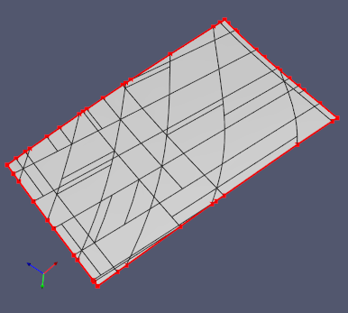

Check open edges
The "open" or "naked" edges are the edges that belong to less than two faces. If an edge is not contained in any faces, it is also called "dangling." Open edges are valid to represent the shell's boundaries in the surface modeling scenarios. In solid modeling, however, the existence of open edges is clearly a problem.

The visualization of Analysis Situs is tuned to show open edges right after a model is loaded. To get the list of open edges explicitly, use check-open-edges command. The following image shows the result of this command on a shell with an open boundary (what is called "open shell" in OpenCascade).

Sometimes open edges can be healed by face stitching. That is especially true whenever you have no significant gaps between your model's faces, so the resultant geometric tolerances will not dramatically explode. If that's the case, use sew command with appropriate tolerance to recover a watertight B-rep.